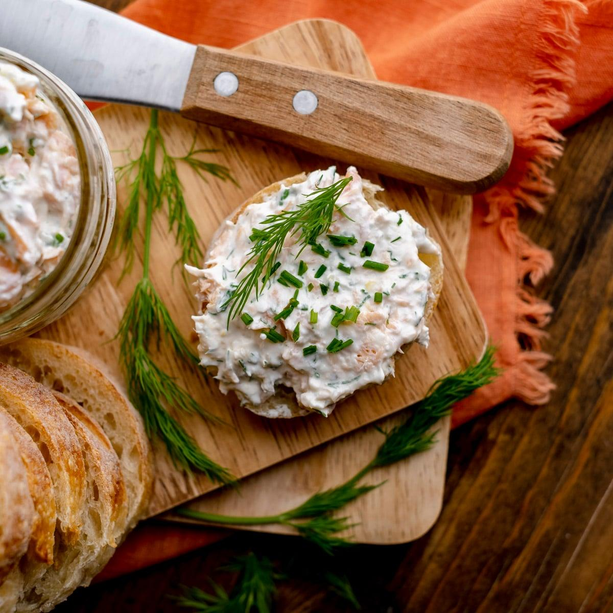
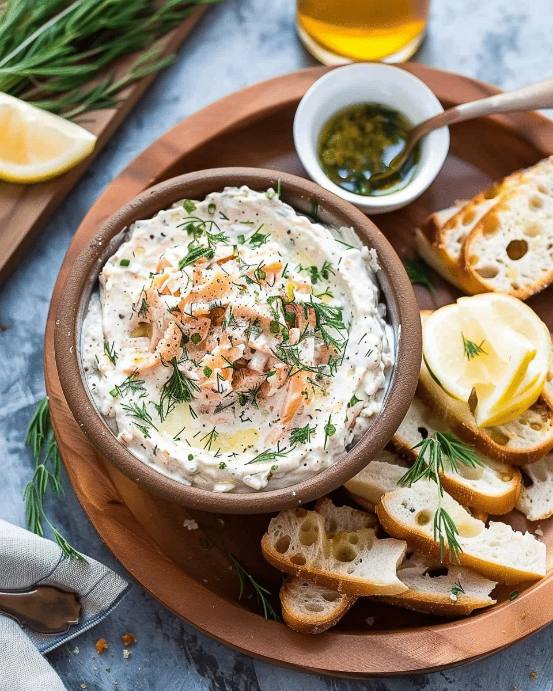

Laurentian brook trout is one of the better-tasting fish you can pull out of a Quebec stream. Sweet, clean, and mild, nothing like the muddy character some people associate with freshwater fish. Smoked, it becomes something else entirely: rich, slightly salty, with a woodsmoke depth that pairs well with fat and acid. Turn that into a dip and you've got the best party appetizer you'll bring all season.
A quick note on the name: this dip uses hot-smoked trout, not cold-smoked. Hot smoking cooks the fish through at 70–90°C, giving you the flaky, fully cooked texture you need for a dip. Cold smoking (like lox) leaves the flesh raw and silky, great for slicing thin, but wrong for this application. If you've ever bought smoked trout from a grocery store, that's hot-smoked. That's what you want here.
Cream cheese and sour cream form the base. Capers add brine, dill and chives add freshness, horseradish and Dijon add a quiet heat and sharpness that keeps the whole thing from being too rich. Lemon juice and zest do the final work of making it taste alive. You can make it the evening before, it actually improves overnight as the flavours settle.
If You're Smoking Your Own Trout
Brine the fish for two hours in salted water with a pinch of brown sugar, this draws out moisture, seasons the flesh throughout, and helps the smoke adhere. Pat completely dry before putting it in the smoker. Alder or cherry wood are the right choices here; both are mild enough not to overpower the trout. Smoke at around 80°C for 90 minutes to two hours, until the flesh flakes easily. Let it cool completely before making the dip, a warm fish breaks down the cream cheese and turns the texture greasy.
If you don't have a smoker, good-quality store-bought hot-smoked trout or rainbow trout works well. The dip will be slightly less complex but still excellent.
Making the Dip
Start with room-temperature cream cheese, cold cream cheese lumps and fights you. Beat it with the sour cream, horseradish, Dijon, lemon juice, and lemon zest until smooth. This is the base, and it should taste good on its own: tangy, slightly sharp, with a little warmth from the horseradish.
Fold in the capers, dill, and chives. Then flake the smoked trout into large chunks, not crumbs, and fold those in last, gently, so you keep visible pieces of fish throughout the dip. Taste and season carefully: the smoked fish is already salty, so you may not need much additional salt at all. A few cracks of black pepper and you're done.

"Smoked, Laurentian brook trout becomes something else entirely, rich, slightly salty, with a woodsmoke depth that pairs well with fat and acid. Turn that into a dip and you've got the best party appetizer you'll bring all season."
The Full Recipe
Ingredients, The Dip
- 250g hot-smoked brook trout (or hot-smoked rainbow trout), skin removed
- 225g (8 oz) cream cheese, room temperature
- ½ cup (120g) sour cream
- 2 tbsp capers, drained and roughly chopped
- 2 tbsp fresh dill, chopped
- 2 tbsp fresh chives, finely sliced
- 1 tbsp prepared horseradish (not creamed)
- 1 tbsp lemon juice, plus zest of half a lemon
- 1 tsp Dijon mustard
- ¼ tsp black pepper
- Salt to taste
To Serve
- Crackers, toasted baguette, or crudités
- Extra dill fronds and chives
- Lemon wedges
- Flaky sea salt
For the Brine (if smoking your own)
- Cold salted water (enough to submerge the fish)
- Pinch of brown sugar
- Alder or cherry wood for smoking
Method
- Flake the trout. Remove any skin and pin bones. Break the flesh into large chunks, you want visible pieces in the finished dip, not a smooth paste.
- Make the base. Beat the cream cheese until smooth, then mix in the sour cream, horseradish, Dijon, lemon juice, and lemon zest. The base should taste good on its own.
- Add the flavour. Fold in the capers, dill, and chives.
- Fold in the trout. Add the flaked fish gently, stir just enough to distribute without breaking it down completely.
- Taste and season. Smoked fish is already salty, taste before adding any salt. Add black pepper and adjust acid with a little extra lemon if needed. Refrigerate at least 30 minutes before serving (overnight is better).
- Serve. Spoon into a bowl. Scatter with extra dill and chives, a pinch of flaky salt, a few whole capers, and a wedge of lemon alongside. Serve cold with crackers, toasted baguette, or vegetables.
A Few Notes
On hot-smoked vs cold-smoked. Hot smoking cooks the fish through at 70–90°C, flaky and fully cooked. Cold smoking (as in lox or gravlax) leaves the flesh raw and silky. This recipe needs hot-smoked. If you're buying from a store, look for smoked trout or smoked salmon in the refrigerated section, that's hot-smoked unless labelled otherwise.
On make-ahead. This dip genuinely improves after a night in the fridge. The flavours meld and the texture firms slightly. Make it the day before and keep it covered, it holds well for up to three days.
On substitutions. Hot-smoked rainbow trout, lake whitefish, or Arctic char all work well in place of brook trout. Smoked salmon is the most widely available substitute and produces a richer, more assertive dip.

20+ years fishing Quebec's freshwater systems. Kayak angler, catch-and-release advocate, and founder of Sub Urban Anglers.
Read More About Me